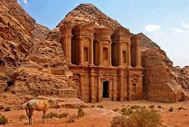

| Wonder No. | Name | Country | Place | Created in | Created by | Images |
|---|---|---|---|---|---|---|
| 1 | Taj Mahal | India | Agra | 1631 | Shah Jahan | |
| 2 | Chichen Itza | Mexico | Yucatan | 600CE | Maya civilization | |
| 3 | Christ the redeemer | Brazil | Rio De Janeiro | 1922-1931 | Princess Isabel | |
| 4 | Colosseum | Italy | Rome | 70-80 AD | Vespasian | |
| 5 | Great Wall of China | China | China | 220-200 BC | Qin Shi Huang | |
| 6 | Machu Picchu | Peru | Cusco Region | 1438-1472 | Pachacuti | |
| 7 | Petra | Jordan | Ma'an Governorate | 3rd Century BC | The Nabateans |  |